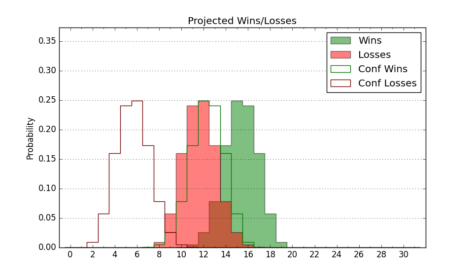

| Home | Game Probabilities | Conferences | Preseason Predictions | Odds Charts | NCAA Tournament |
| City: | Macomb, Illinois | |
| Conference: | Ohio Valley (2nd)
| |
| Record: | 6-2 (Conf) 9-8 (Overall) | |
| Ratings: | Comp.: -6.9 (250th) Net: -6.6 (245th) Off: 96.1 (307th) Def: 102.7 (143rd) SoR: 0.0 (167th) |
| Remaining | ||||||
|---|---|---|---|---|---|---|
| Date | Opponent | Win Prob | Pred. | |||
| 2/1 | @ Lindenwood (352) | 71.6% | W 68-62 | |||
| 2/3 | @ Southeast Missouri St. (349) | 70.7% | W 68-62 | |||
| 2/8 | Little Rock (285) | 72.5% | W 75-69 | |||
| 2/10 | Tennessee Martin (249) | 64.7% | W 75-70 | |||
| 2/15 | @ Tennessee Tech (336) | 62.2% | W 66-62 | |||
| 2/17 | @ Tennessee St. (255) | 36.9% | L 64-68 | |||
| 2/22 | Morehead St. (115) | 34.2% | L 62-66 | |||
| 2/24 | Southern Indiana (321) | 81.8% | W 69-59 | |||
| 2/29 | Eastern Illinois (310) | 78.1% | W 67-58 | |||
| 3/2 | SIU Edwardsville (253) | 65.9% | W 65-61 | |||
| Previous | Game Score | |||||
| Date | Opponent | Win Prob | Result | Off | Def | Net |
| 11/6 | @UTSA (269) | 39.3% | L 68-78 | -19.6 | 4.2 | -15.4 |
| 11/8 | @SMU (31) | 4.3% | L 53-90 | -14.2 | -2.2 | -16.5 |
| 11/17 | Southern (247) | 64.3% | W 88-80 | 10.7 | -0.6 | 10.1 |
| 11/21 | @Valparaiso (283) | 43.0% | L 66-73 | 2.8 | -9.5 | -6.7 |
| 11/24 | @Illinois (13) | 2.3% | L 52-84 | -14.6 | 2.8 | -11.8 |
| 11/27 | @Wisconsin (11) | 2.0% | L 49-71 | 0.6 | -6.1 | -5.5 |
| 12/3 | South Dakota (318) | 80.8% | L 68-70 | -10.0 | 0.0 | -10.0 |
| 12/9 | @Green Bay (213) | 29.9% | W 68-59 | 23.7 | 2.3 | 26.1 |
| 12/20 | @Central Arkansas (344) | 67.1% | W 65-54 | -10.3 | 24.9 | 14.6 |
| 12/31 | @SIU Edwardsville (253) | 36.2% | W 78-70 | 24.5 | -6.8 | 17.7 |
| 1/4 | Southeast Missouri St. (349) | 89.2% | W 68-61 | -3.3 | -8.9 | -12.2 |
| 1/6 | Lindenwood (352) | 89.6% | W 68-57 | 1.6 | -4.6 | -3.1 |
| 1/11 | @Tennessee Martin (249) | 35.0% | W 73-64 | 8.5 | 15.1 | 23.6 |
| 1/13 | @Eastern Illinois (310) | 51.1% | W 63-60 | 6.3 | -3.1 | 3.2 |
| 1/20 | Tennessee St. (255) | 66.5% | L 57-58 | -7.4 | 1.9 | -5.4 |
| 1/25 | @Southern Indiana (321) | 56.8% | W 73-68 | 11.5 | -11.3 | 0.3 |
| 1/27 | @Morehead St. (115) | 13.2% | L 50-64 | -9.9 | 5.4 | -4.5 |
| Stats & Trends | |||||
|---|---|---|---|---|---|
| Current | Day | Week | Month | Season | |
| Composite | -6.9 | -0.1 | +0.2 | +2.9 | +2.8 |
| Comp Rank | 250 | -- | -4 | +25 | +15 |
| Net Efficiency | -6.6 | -0.1 | +0.0 | +3.2 | -- |
| Net Rank | 245 | -- | -3 | +31 | -- |
| Off Efficiency | 96.1 | -0.1 | +0.5 | +4.5 | -- |
| Off Rank | 307 | +1 | +8 | +28 | -- |
| Def Efficiency | 102.7 | +0.0 | -0.5 | -1.3 | -- |
| Def Rank | 143 | +1 | -5 | -1 | -- |
| SoS Rank | 282 | +1 | +24 | -90 | -- |
| Exp. Wins | 15.3 | -0.0 | +0.3 | +2.7 | +2.1 |
| Exp. Conf Wins | 12.3 | -0.0 | +0.3 | +2.7 | +2.5 |
| Conf Champ Prob | 11.4 | -0.2 | -1.9 | +5.4 | -2.4 |

| Advanced Stats | ||
|---|---|---|
| Stat | Value | Rank |
| Off Eff FG % | 0.455 | 319 |
| Off Ast Ratio | 0.129 | 254 |
| Off ORB% | 0.352 | 22 |
| Off TO Rate | 0.185 | 351 |
| Off FT Ratio | 0.324 | 196 |
| Def Eff FG % | 0.487 | 119 |
| Def Ast Ratio | 0.133 | 111 |
| Def ORB% | 0.270 | 160 |
| Def TO Rate | 0.116 | 348 |
| Def FT Ratio | 0.303 | 124 |